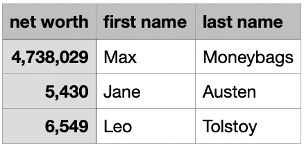

s3: exploring data using tidyverse
STA141A: Fundamentals of Statistical Data Science
Quick note

Wickham and Grolemund (2017)
This slide deck (3-4 lectures) is meant to get you started working with data: Import, Tidy, Transform, Visualize. (Modeling will be middle half of this course.)
- By no means is it exhaustive.
- Too much? Too little? Strongly depends on previous experience.
- PRACTICE with basic tools to get comfortable before learning new ones.
tidyverse
tidyverse approach to data manipulation
Why use tidyverse over base R or data.table or other packages?
The tidyverse is an opinionated collection of R packages designed for data science. All packages share an underlying design philosophy, grammar, and data structures. — https://www.tidyverse.org/
- Consistent syntax.
- Many people work full-time (and get paid!) to make new packages, add new functionality, etc.
- In contrast, many other packages are created/maintained/updated by researchers who work on this part-time.
- Downside: slow for large data sets. (Use
data.tableinstead.)
This slide deck will primarily use tidyverse solutions, but it’s always good to know base R solutions.
Reminder about packages
- Packages are things we load using
library(). - If you haven’t installed a package
PACKAGENAMEbefore, you’ll get an error. - To install a package:
install.packages("PACKAGENAME"). - To load a package:
library(PACKAGENAME). - For example:
Load example dataset
# A tibble: 336,776 × 19
year month day dep_time sched_dep_time dep_delay arr_time sched_arr_time
<int> <int> <int> <int> <int> <dbl> <int> <int>
1 2013 1 1 517 515 2 830 819
2 2013 1 1 533 529 4 850 830
3 2013 1 1 542 540 2 923 850
4 2013 1 1 544 545 -1 1004 1022
5 2013 1 1 554 600 -6 812 837
6 2013 1 1 554 558 -4 740 728
7 2013 1 1 555 600 -5 913 854
8 2013 1 1 557 600 -3 709 723
9 2013 1 1 557 600 -3 838 846
10 2013 1 1 558 600 -2 753 745
# ℹ 336,766 more rows
# ℹ 11 more variables: arr_delay <dbl>, carrier <chr>, flight <int>,
# tailnum <chr>, origin <chr>, dest <chr>, air_time <dbl>, distance <dbl>,
# hour <dbl>, minute <dbl>, time_hour <dttm>Piping: %>% and |>
The operator %>% (requires the magrittr package) allow you to write operations sequentially.
Can instead pipe an output into the (first) argument of another function.
Can also use |>, which is included in R 4.1.0 (no need to install another package)
Piping: %>% and |>
Why pipe? Can be easier to read and understand.
vs
We will see more complex examples of this shortly.
Importing data
Introduction
We have seen data sets that are either built into base R or come from external packages
- We will eventually want to import data from external files
Types of data files
- CSV: comma separated values (this course will use this type the most)
- TSV: tab separated values
- FWF: fixed width file
To load files, the readr package has the following functions:
read_csv(),read_tsv(),read_delim()read_fwf(),read_table()
read_csv(): can you spot the differences?
networth.csv
net.worth first.name last.name
1 4,738,029 Max Moneybags
2 5,430 Jane Austen
3 6,549 Leo Tolstoy# A tibble: 3 × 3
`net worth` `first name` `last name`
<dbl> <chr> <chr>
1 4738029 Max Moneybags
2 5430 Jane Austen
3 6549 Leo Tolstoy read_csv(): can you spot the differences?
Column names can have spaces. How to access?
# A tibble: 3 × 3
`net worth` `first name` `last name`
<dbl> <chr> <chr>
1 4738029 Max Moneybags
2 5430 Jane Austen
3 6549 Leo Tolstoy [1] 47380290 54300 65490You’ll likely want to use external files for your final project
- For lecture, mostly stick with datasets from base R or packages
Subsetting a data frame
Subset based on data values (rather than row/column indices)
- Column:
select() - Row:
filter()
The select() function
Returns a tibble with the columns specified, in order specified.
[1] "origin" "dest" "air_time" "distance"[1] "distance" "dest" "origin" "air_time"[1] "distance" "dest" "origin" "air_time"Helper functions for select()
starts_with("abc"): matches names that begin with “abc”.ends_with("xyz"): matches names that end with “xyz”.contains("ijk"): matches names that contain “ijk”.
[1] "year" "month" "day" "dep_time"
[5] "sched_dep_time" "dep_delay" "arr_time" "sched_arr_time"
[9] "arr_delay" "carrier" "flight" "tailnum"
[13] "origin" "dest" "air_time" "distance"
[17] "hour" "minute" "time_hour" # A tibble: 336,776 × 4
origin dest sched_dep_time sched_arr_time
<chr> <chr> <int> <int>
1 EWR IAH 515 819
2 LGA IAH 529 830
...The filter() function
Example: flights on February 15
# A tibble: 954 × 19
year month day dep_time sched_dep_time dep_delay arr_time sched_arr_time
<int> <int> <int> <int> <int> <dbl> <int> <int>
1 2013 2 15 3 2358 5 503 438
2 2013 2 15 6 2115 171 48 2214
3 2013 2 15 6 2250 76 117 5
4 2013 2 15 22 2230 112 510 312
5 2013 2 15 36 2352 44 607 437
...The filter() function
Expressions can be built up using comparison operators and logical operators.
&is “and”|is “or”!is “not”%in%is a membership checker (is an object inside of a vector)>,<mean greater than, less than>=,<=mean greater than or equal to, less than or requal to==means “is equal”!=means “is not equal”
Examples of filter()
# A tibble: 2,076 × 5
time_hour origin dest air_time distance
<dttm> <chr> <chr> <dbl> <dbl>
1 2013-01-01 09:00:00 LGA PHL 32 96
2 2013-01-01 13:00:00 EWR BDL 25 116
3 2013-01-01 16:00:00 JFK PHL 35 94
...Spot the error?
Spot the error?
Equivalent ways to filter on multiple conditions
# A tibble: 493 × 4
origin dest air_time distance
<chr> <chr> <dbl> <dbl>
1 EWR BDL 25 116
2 EWR BDL 24 116
3 EWR BDL 24 116
...Inspect a data frame
count()
To count occurrences of different pairs/“tuples” of values across columns:
e.g. for flights, want to count how many flights by origin:
count()
To count occurrences of different pairs/“tuples” of values across columns:
e.g. for flights, want to count how many flights by origin:
Summary statistics and missing data
Common summary statistics of interest in data:
- Mean (
mean()) - Min/max (
min(),max()) - Median (
median()) - Standard deviation / variance (
sd(),var())
R denotes missing data using NA. Typically, if you compute a function of a vector with NAs, it will return NA, unless you put na.rm=TRUE.
summarise()
If you want to compute summary statistics of dataframe, use summarise().
summarize()
If you want to compute summary statistics of dataframe, use summarize().
group_by() and summarise()
To compute summary statistics per category, use group_by() first.
mutate()
mutate() adds new columns to the data frame using functions of extant columns.
flights %>%
select(origin, dest, air_time, distance, air_time) %>%
mutate(hours = air_time / 60,
mi_per_hour = distance / hours,
km_per_hour = 1.61 * mi_per_hour)# A tibble: 336,776 × 7
origin dest air_time distance hours mi_per_hour km_per_hour
<chr> <chr> <dbl> <dbl> <dbl> <dbl> <dbl>
1 EWR IAH 227 1400 3.78 370. 596.
2 LGA IAH 227 1416 3.78 374. 603.
3 JFK MIA 160 1089 2.67 408. 657.
4 JFK BQN 183 1576 3.05 517. 832.
5 LGA ATL 116 762 1.93 394. 635.
6 EWR ORD 150 719 2.5 288. 463.
...mi_per_hour uses hours, which was created within the same mutate() call.
Reshaping a data frame
Tidy data
Multiple equivalent ways of organizing data into a dataframe.
table1
#> # A tibble: 6 × 4
#> country year cases population
#> <chr> <dbl> <dbl> <dbl>
#> 1 Afghanistan 1999 745 19987071
#> 2 Afghanistan 2000 2666 20595360
#> 3 Brazil 1999 37737 172006362
#> 4 Brazil 2000 80488 174504898
#> 5 China 1999 212258 1272915272
#> 6 China 2000 213766 1280428583
table2
#> # A tibble: 12 × 4
#> country year type count
#> <chr> <dbl> <chr> <dbl>
#> 1 Afghanistan 1999 cases 745
#> 2 Afghanistan 1999 population 19987071
#> 3 Afghanistan 2000 cases 2666
#> 4 Afghanistan 2000 population 20595360
#> 5 Brazil 1999 cases 37737
#> 6 Brazil 1999 population 172006362
#> # ℹ 6 more rowstable1 is tidy - easier to work with using tidyverse.
Tidy data
- Each variable is a column; each column is a variable.
- Each observation is a row; each row is an observation.
- Each value is a cell; each cell is a single value.
Tidy data
Why tidy data?
- Consistency - uniform format makes collaboration easier
- Vectorization - R commands often operate on vectors of data, best for each column to be a vector of data
Tidying data
Unfortunately, most real-world datasets you encounter are NOT tidy.
- A large part of “data scientist work” consists in tidying data (“cleaning data”).
# A tibble: 317 × 79
artist track date.entered wk1 wk2 wk3 wk4 wk5 wk6 wk7 wk8
<chr> <chr> <date> <dbl> <dbl> <dbl> <dbl> <dbl> <dbl> <dbl> <dbl>
1 2 Pac Baby… 2000-02-26 87 82 72 77 87 94 99 NA
2 2Ge+her The … 2000-09-02 91 87 92 NA NA NA NA NA
3 3 Doors D… Kryp… 2000-04-08 81 70 68 67 66 57 54 53
4 3 Doors D… Loser 2000-10-21 76 76 72 69 67 65 55 59
5 504 Boyz Wobb… 2000-04-15 57 34 25 17 17 31 36 49
6 98^0 Give… 2000-08-19 51 39 34 26 26 19 2 2
7 A*Teens Danc… 2000-07-08 97 97 96 95 100 NA NA NA
...Lengthening data with pivot_longer()
# A tibble: 317 × 79
artist track date.entered wk1 wk2 wk3 wk4 wk5 wk6 wk7 wk8
<chr> <chr> <date> <dbl> <dbl> <dbl> <dbl> <dbl> <dbl> <dbl> <dbl>
1 2 Pac Baby… 2000-02-26 87 82 72 77 87 94 99 NA
2 2Ge+her The … 2000-09-02 91 87 92 NA NA NA NA NA
3 3 Doors D… Kryp… 2000-04-08 81 70 68 67 66 57 54 53
...- Each observation is a song.
- First three columns (
artist,track,date.entered) describe the song. - The next 76 columns (
wk1,wk2, …,wk76) say song’s rank in each week. - But week should be a variable.
- Each observation should be
artist-track-date.entered-week-rank. - To make it tidy, each observation should be a row. Need to make the dataframe longer.
Lengthening data with pivot_longer()
billboard %>%
pivot_longer(
cols = starts_with("wk"), # `cols`: which columns need to be pivoted
names_to = "week", # `names_to`: name of the column that the pivoted column names go
values_to = "rank" # `values_to`: name of the column that the pivoted cell values go
)# A tibble: 24,092 × 5
artist track date.entered week rank
<chr> <chr> <date> <chr> <dbl>
1 2 Pac Baby Don't Cry (Keep... 2000-02-26 wk1 87
2 2 Pac Baby Don't Cry (Keep... 2000-02-26 wk2 82
3 2 Pac Baby Don't Cry (Keep... 2000-02-26 wk3 72
4 2 Pac Baby Don't Cry (Keep... 2000-02-26 wk4 77
...- “week” and “rank” do not appear as column names in billboard, so need quotes
Lengthening data with pivot_longer()
billboard %>%
pivot_longer(
cols = starts_with("wk"), # `cols`: which columns need to be pivoted
names_to = "week", # `names_to`: name of the column that the pivoted column names go
values_to = "rank" # `values_to`: name of the column that the pivoted cell values go
)# A tibble: 24,092 × 5
artist track date.entered week rank
<chr> <chr> <date> <chr> <dbl>
1 2 Pac Baby Don't Cry (Keep... 2000-02-26 wk1 87
2 2 Pac Baby Don't Cry (Keep... 2000-02-26 wk2 82
3 2 Pac Baby Don't Cry (Keep... 2000-02-26 wk3 72
4 2 Pac Baby Don't Cry (Keep... 2000-02-26 wk4 77
...Data is now tidy, but not ideal for data analysis. Why?
weekshould ideally be a number, not a character- Can use
readr::parse_number()that extracts first number from string to fix.
Lengthening data with pivot_longer()
billboard %>%
pivot_longer(
cols = starts_with("wk"),
names_to = "week",
values_to = "rank"
) %>%
mutate(week = parse_number(week))# A tibble: 24,092 × 5
artist track date.entered week rank
<chr> <chr> <date> <dbl> <dbl>
1 2 Pac Baby Don't Cry (Keep... 2000-02-26 1 87
2 2 Pac Baby Don't Cry (Keep... 2000-02-26 2 82
3 2 Pac Baby Don't Cry (Keep... 2000-02-26 3 72
4 2 Pac Baby Don't Cry (Keep... 2000-02-26 4 77
...Understanding pivot_longer()
Consider toy dataset: three people (A, B, C) each with two blood pressure (BP) measurements.
Understanding pivot_longer()

Values in columns that are already variables (here, id) need to be repeated for each pivoted column.
Understanding pivot_longer()

Pivoted column names bp1,bp2 become values in new column "measurement"; values repeated for each row in df.
Understanding pivot_longer()

Cell values are values in a new variable, with name values_to, unwound row by row.
Widening data
We’ll now use pivot_wider() to widen data which is (too) long.
cms_patient_experience <- tidyr::cms_patient_experience %>%
select(-measure_title)
cms_patient_experience# A tibble: 500 × 4
org_pac_id org_nm measure_cd prf_rate
<chr> <chr> <chr> <dbl>
1 0446157747 USC CARE MEDICAL GROUP INC CAHPS_GRP_1 63
2 0446157747 USC CARE MEDICAL GROUP INC CAHPS_GRP_2 87
3 0446157747 USC CARE MEDICAL GROUP INC CAHPS_GRP_3 86
4 0446157747 USC CARE MEDICAL GROUP INC CAHPS_GRP_5 57
5 0446157747 USC CARE MEDICAL GROUP INC CAHPS_GRP_8 85
6 0446157747 USC CARE MEDICAL GROUP INC CAHPS_GRP_12 24
7 0446162697 ASSOCIATION OF UNIVERSITY PHYSICIANS CAHPS_GRP_1 59
...The basic unit studied is an organization, but it’s spread across six rows for different measurements.
Widening data
cms_patient_experience %>%
pivot_wider(
id_cols = starts_with("org"), # org_pac_id and org_nm are identifiers
names_from = measure_cd,
values_from = prf_rate
)# A tibble: 95 × 8
org_pac_id org_nm CAHPS_GRP_1 CAHPS_GRP_2 CAHPS_GRP_3 CAHPS_GRP_5 CAHPS_GRP_8
<chr> <chr> <dbl> <dbl> <dbl> <dbl> <dbl>
1 0446157747 USC C… 63 87 86 57 85
2 0446162697 ASSOC… 59 85 83 63 88
3 0547164295 BEAVE… 49 NA 75 44 73
4 0749333730 CAPE … 67 84 85 65 82
5 0840104360 ALLIA… 66 87 87 64 87
6 0840109864 REX H… 73 87 84 67 91
...If you don’t supply id_cols, R assumes that all columns EXCEPT for names_from and values_from are id_cols.
Understanding pivot_wider()
Dataset where two patients (A, B), with between 2 and 3 BP measurements.
# A tibble: 2 × 4
id bp1 bp2 bp3
<chr> <dbl> <dbl> <dbl>
1 A 100 120 105
2 B 140 115 NA- There is no measurement for bp3 for B, so R puts in
NA. id_colsis empty, so R assumes that all columns EXCEPT fornames_fromandvalues_fromare id_cols.
Going from long to wide and back again
# A tibble: 5 × 3
id measurement value
<chr> <chr> <dbl>
1 A bp1 100
2 B bp1 140
3 B bp2 115
4 A bp2 120
5 A bp3 105Tidy check
# A tibble: 8 × 4
City Date Measurement Value
<chr> <chr> <chr> <dbl>
1 CityA 2024-01-01 Temperature 20
2 CityA 2024-01-01 Humidity 80
3 CityA 2024-01-02 Temperature 22
4 CityA 2024-01-02 Humidity 82
5 CityB 2024-01-01 Temperature 18
6 CityB 2024-01-01 Humidity 85
7 CityB 2024-01-02 Temperature 19
8 CityB 2024-01-02 Humidity 88- Not tidy, since each variable is not a column, e.g. temperature/humidity.
- “Tidyness” can be a bit ambiguous, but if a column has different units (e.g., degrees vs. % humidity), likely not tidy.
- Q: How do we make the table wider?
Tidy check
Tidy check
# A tibble: 3 × 3
Student Math Chem
<chr> <dbl> <dbl>
1 Alice 85 90
2 Bob 92 78
3 Charlie 88 95Make scores longer by having a column called Subject with values "Math" and "Chem".
- Q: Is the following code correct?
No: scores tries to refer to Subject and Score which are not columns.
Complex calculations
Complex calculations
Q: For each origin airport, compute the average flight time, in hours, for flights over 500 miles long.
Complex calculations
Q: For each origin airport, compute the average flight time, in hours, for flights over 500 miles long.
Complex calculations
Q: For each origin airport, compute the average flight time, in hours, for flights over 500 miles long vs. less than or equal to 500 miles long.
Complex calculations
Q: For each origin airport, compute the average flight time, in hours, for flights over 500 miles long vs. less than or equal to 500 miles long.
We will need to group_by() two variables:
- origin airport
- whether flight is \(> 500\) or \(\leq 500\) miles. (We need to create this variable.)
flights %>%
select(origin, air_time, distance) %>% # for visual clarity, not actually needed
mutate(air_time_hrs = air_time / 60,
distance_greater_500mi = distance > 500)# A tibble: 336,776 × 5
origin air_time distance air_time_hrs distance_greater_500mi
<chr> <dbl> <dbl> <dbl> <lgl>
1 EWR 227 1400 3.78 TRUE
2 LGA 227 1416 3.78 TRUE
3 JFK 160 1089 2.67 TRUE
4 JFK 183 1576 3.05 TRUE
...Complex calculations
Q: For each origin airport, compute the average flight time, in hours, for flights over 500 miles long vs. less than or equal to 500 miles long.
flights %>%
mutate(air_time_hrs = air_time / 60,
distance_greater_500mi = distance > 500) %>%
group_by(origin, distance_greater_500mi) %>%
summarize(avg_flight_time_hrs = mean(air_time_hrs, na.rm=TRUE))# A tibble: 6 × 3
# Groups: origin [3]
origin distance_greater_500mi avg_flight_time_hrs
<chr> <lgl> <dbl>
1 EWR FALSE 0.900
2 EWR TRUE 2.99
3 JFK FALSE 0.849
4 JFK TRUE 3.76
5 LGA FALSE 0.916
6 LGA TRUE 2.27 Operating on logical vectors
Intro
For logical vectors, every element takes one of 3 values: TRUE, FALSE, NA
We’ll investigate how to manipulate and transform data to get logicals, and how to use logicals.
# A tibble: 336,776 × 19
year month day dep_time sched_dep_time dep_delay arr_time sched_arr_time
<int> <int> <int> <int> <int> <dbl> <int> <int>
1 2013 1 1 517 515 2 830 819
2 2013 1 1 533 529 4 850 830
3 2013 1 1 542 540 2 923 850
4 2013 1 1 544 545 -1 1004 1022
...Three basic logical operators that we will use over and over:
- AND (denoted
&in R): operation between two logicals - OR (denoted
|in R): operation between two logicals - NOT (denoted
!in R): operation on a single logical.
Truth table for AND:
| A | B | A & B |
|---|---|---|
TRUE |
TRUE |
TRUE |
TRUE |
FALSE |
FALSE |
FALSE |
TRUE |
FALSE |
FALSE |
FALSE |
FALSE |
Truth table for OR:
| A | B | A | B |
|---|---|---|
TRUE |
TRUE |
TRUE |
TRUE |
FALSE |
TRUE |
FALSE |
TRUE |
TRUE |
FALSE |
FALSE |
FALSE |
Truth table for NOT:
| A | ! A |
|---|---|
TRUE |
FALSE |
FALSE |
TRUE |
Can combine AND/OR with NOT to cover any binary Boolean operation
Comparisons
Common way to create a logical vector: numeric comparison with <, !=, etc.
We have implicitly been using this when doing filtering.
[1] FALSE FALSE FALSE FALSE FALSE FALSE FALSE FALSE FALSE FALSE FALSE FALSE
[13] FALSE FALSE FALSE FALSE FALSE FALSE FALSE TRUE TRUE TRUE TRUE TRUE
...Using a comparator between two vectors of logicals returns pairwise comparisons.
Comparisons
So when we use multiple comparisons in filter(), we are building a new vector of logicals.
We only keep those rows where the vector is TRUE.
# A tibble: 172,286 × 19
year month day dep_time sched_dep_time dep_delay arr_time sched_arr_time
<int> <int> <int> <int> <int> <dbl> <int> <int>
1 2013 1 1 601 600 1 844 850
2 2013 1 1 602 610 -8 812 820
3 2013 1 1 602 605 -3 821 805
...Comparisons
filter() and mutate() can be used in conjunction
flights %>%
mutate(
daytime = dep_time > 600 & dep_time < 2000,
approx_ontime = abs(arr_delay) < 20,
) %>%
filter(daytime & approx_ontime)# A tibble: 172,286 × 21
year month day dep_time sched_dep_time dep_delay arr_time sched_arr_time
<int> <int> <int> <int> <int> <dbl> <int> <int>
1 2013 1 1 601 600 1 844 850
2 2013 1 1 602 610 -8 812 820
3 2013 1 1 602 605 -3 821 805
...Floating point comparisons
Testing equality with == for floating points can cause problems. Numbers are represented with finite “precision”, i.e. only up to 2^{-32} or 2^{-64}.
What’s going on? Let’s look at more precise representation in R.
Missing values
Missing values
A useful function for dealing with NA: is.na()
is.na(x) works with any type of vector and returns TRUE for missing values and FALSE for everything else:
Missing values
Since is.na() returns logicals, can be used in filter():
Missing values
Can use to help identify where NA come from. e.g., why are there air_time NAs?
- Let’s examine how
dep_time,dep_delay, andsched_dep_timeare related.
flights %>%
mutate(missing_dep_time = is.na(dep_time),
missing_dep_delay = is.na(dep_delay),
missing_sched_dep_time = is.na(sched_dep_time)) %>%
count(missing_dep_time, missing_dep_delay, missing_sched_dep_time)# A tibble: 2 × 4
missing_dep_time missing_dep_delay missing_sched_dep_time n
<lgl> <lgl> <lgl> <int>
1 FALSE FALSE FALSE 328521
2 TRUE TRUE FALSE 8255- The only instances where
dep_delayis missing havedep_timemissing.
Missing values
- Is it the case that
dep_delay=dep_time-sched_dep_time?
flights %>%
mutate(dep_delay_manual = dep_time - sched_dep_time,
manual_matches_given = near(dep_delay_manual, dep_delay)) %>%
count(manual_matches_given)# A tibble: 3 × 2
manual_matches_given n
<lgl> <int>
1 FALSE 99777
2 TRUE 228744
3 NA 8255Quite weird, since we are getting a lot right but also getting a lot wrong.
Missing values
Let’s inspect further. What do the mismatched observations look like?
flights %>%
mutate(manual_delay = dep_time - sched_dep_time,
manual_matches_given = near(manual_delay, dep_delay)) %>%
filter(!manual_matches_given) %>%
select(time_hour, flight, dep_time, sched_dep_time, dep_delay, manual_delay)# A tibble: 99,777 × 6
time_hour flight dep_time sched_dep_time dep_delay manual_delay
<dttm> <int> <int> <int> <dbl> <int>
1 2013-01-01 06:00:00 461 554 600 -6 -46
2 2013-01-01 06:00:00 507 555 600 -5 -45
3 2013-01-01 06:00:00 5708 557 600 -3 -43
...Problem: R is treating dep_time and sched_dep_time as integers, not time!
- 5:54 is only 6 minutes away from 6:00, rather than 46.
- We might discuss later (after midterm 2) how to properly treat dates and times.
Missing values in Boolean algebra
Logical and missing values interact in logical, but maybe counterintuitive ways.
- Think of
NAas “unknown” logical value.
Does not depend on value of NA:
NAORTRUEwill returnTRUE.NAANDFALSEwill returnFALSE.
Depends on value of NA:
NAANDTRUEwill returnNA.NAORFALSEwill returnNA.
Consider finding all flights departing in November or December.
# A tibble: 55,403 × 19
year month day dep_time sched_dep_time dep_delay arr_time sched_arr_time
<int> <int> <int> <int> <int> <dbl> <int> <int>
1 2013 11 1 5 2359 6 352 345
2 2013 11 1 35 2250 105 123 2356
...# A tibble: 336,776 × 19
year month day dep_time sched_dep_time dep_delay arr_time sched_arr_time
<int> <int> <int> <int> <int> <dbl> <int> <int>
1 2013 1 1 517 515 2 830 819
2 2013 1 1 533 529 4 850 830
...%in%
Instead of worrying about | and == in order, just use %in%.
So to find all flights from November and December:
%in%obeys different rules forNAvs.==, sinceNA %in% NAis TRUE:
Logical summaries
Two main functions for logical summaries:
any(x)returnsTRUEif any value inxisTRUEall(x)returnsTRUEonly if all values inxareTRUE
For instance, was there a day where every flight was delayed on departure by less than an hour? Or a day where there were any flights delayed on arrival by \(\leq 5\) hours?
flights %>%
group_by(year, month, day) %>%
summarize(
all_delayed = all(dep_delay <= 60, na.rm=TRUE),
any_long_delay = any(arr_delay >= 300, na.rm=TRUE)
)# A tibble: 365 × 5
# Groups: year, month [12]
year month day all_delayed any_long_delay
<int> <int> <int> <lgl> <lgl>
1 2013 1 1 FALSE TRUE
2 2013 1 2 FALSE TRUE
3 2013 1 3 FALSE FALSE
4 2013 1 4 FALSE FALSE
...Logical summaries
- When coerced into a numeric, TRUE coerces to 1 and FALSE coerces to 0
- Useful if you want to find proportions that are TRUE/FALSE, e.g.
mean(),sum()
Logical summaries
- Example: proportion of flights delayed > 1 hour on departure, and number of flights delayed on arrival by > 5 hours:
flights %>%
group_by(year, month, day) %>%
summarise(
prop_delayed_1hour = mean(dep_delay > 60, na.rm=TRUE),
num_long_delay = sum(arr_delay > 300, na.rm=TRUE)
)# A tibble: 365 × 5
# Groups: year, month [12]
year month day prop_delayed_1hour num_long_delay
<int> <int> <int> <dbl> <int>
1 2013 1 1 0.0609 3
2 2013 1 2 0.0856 3
3 2013 1 3 0.0586 0
...Note output: # Groups: year, month [12]
Logical summaries
- Example: proportion of flights delayed > 1 hour on departure, and number of flights delayed on arrival by > 5 hours:
flights %>%
group_by(year, month, day) %>%
summarise(
prop_delayed_1hour = mean(dep_delay > 60, na.rm=TRUE),
num_long_delay = sum(arr_delay > 300, na.rm=TRUE),
.groups = 'drop'
)# A tibble: 365 × 5
year month day prop_delayed_1hour num_long_delay
<int> <int> <int> <dbl> <int>
1 2013 1 1 0.0609 3
2 2013 1 2 0.0856 3
3 2013 1 3 0.0586 0
...Conditional transformations: if_else()
if_else(CONDITION, TRUE_VAL, FALSE_VAL, MISSING_VAL) is useful when we want to return some value when condition is TRUE and return another value when condition is FALSE.
The fourth argument of if_else() specifies what to fill NA’s with:
[1] "boo" "boo"
[3] "yay" "yay"
[5] "idk how i feel about x yet"We can also use vectors as an argument.
Conditional transformations: if_else()
We can use general vectors inside of if_else():
Conditional transformations: case_when()
If you have many different conditions for which you want to specify values, e.g.
- If number is between
aandbthen do… - If number is between
bandcthen do… - If number is between
canddthen do…
You can use case_when().
Conditional transformations: case_when()
Inspired by SQL’s CASE statement. Has a very weird syntax:
condition ~ outputconditionis a logical vector- when
conditionisTRUE,outputis used.
Weird, but pretty readable:
Conditional transformations: case_when()
If no cases match, then returns NA:
If multiple conditions are satisfied, only the first is used – be careful!
case_when(): more complex example
Provide human-readable labels to flight delays.
flights |>
mutate(
status = case_when(
is.na(arr_delay) ~ "cancelled",
arr_delay < -30 ~ "very early",
arr_delay < -15 ~ "early",
abs(arr_delay) <= 15 ~ "on time",
arr_delay < 60 ~ "late",
arr_delay < Inf ~ "very late",
),
.keep = "used" # only returns those columns used in calculations
)# A tibble: 336,776 × 2
arr_delay status
<dbl> <chr>
1 11 on time
2 20 late
...- We can refer to variables inside the dataframe inside
case_when(), just as in most othertidyversefunctions . - The first conditional that is true is what gets assigned.
- So when
arr_delay < -30, the remaining conditionals do not get checked.
Compatible types
Both if_else() and case_when() require the outputs to be of consistent types.
Most types are incompatible in order to catch errors. Compatible types:
- Numeric and logical (treats TRUE=1, FALSE=0)
- Dates and “date-times” – we might discuss these types after midterm 2
NAis compatible with everything- Strings and factors are compatible
Example: labelling numbers as even or odd
- Number is even \(\Leftrightarrow\) number is divisible by two.
- In R, operator
%%(read “modulo”) does “modular arithmetic”: a %% breturns the remainder when dividingabyb, e.g.17 %% 12 = 534 %% 6 = 4
- A number
nis even if and only ifn %% 2 == 0; otherwise, odd. - We can use
if_elseto label numbers between 0 and 20 as even or odd
Operating on numeric vectors
Parsing strings to get numbers
readr package in the tidyverse has two useful functions:
parse_double()– useful when you have numbers written as strings.parse_number()– ignores all non-numeric text to parse strings.
Parsing strings to get numbers
What happens if use parse_double() with non-numeric-identifying strings?
x <- parse_double(c("qwerty", "6.5", "asdf"))
str(x) # shows that x is a vector with informative attributes num [1:3] NA 6.5 NA
- attr(*, "problems")= tibble [2 × 4] (S3: tbl_df/tbl/data.frame)
..$ row : int [1:2] 1 3
..$ col : int [1:2] NA NA
..$ expected: chr [1:2] "a double" "a double"
..$ actual : chr [1:2] "qwerty" "asdf"Can access this tibble by attributes(x)$problems
Arithmetic and “recycling rules”
- We’ve created new rows before
- e.g.
flights %>% mutate(air_time_hr = air_time / 60). air_timehas 336,776 elements while 60 has only one, so we divide every element ofair_timeby 60.
- e.g.
- If you have two vectors of same length, operations are done element-wise:
Arithmetic and “recycling rules”
What happens if the number of elements is not 1 or the exact matching number?
R does what is called recycling, or repeating
- It will create a new vector which repeats until reaches vector length.
- Will throw warning if not an even multiple.
- It will create a new vector which repeats until reaches vector length.
Recycling rules
Rules apply for all logical comparison (==, <, etc) and arithmetic (+, ^, etc)
- Be careful when doing logical comparisons / arithmetic using two vectors!
# A tibble: 25,977 × 19
year month day dep_time sched_dep_time dep_delay arr_time sched_arr_time
<int> <int> <int> <int> <int> <dbl> <int> <int>
1 2013 1 1 517 515 2 830 819
2 2013 1 1 542 540 2 923 850
3 2013 1 1 554 600 -6 812 837
...month == c(1,2)returns a logical vector where:TRUEif either the row number is odd and the month is 1, OR row number is even and month 2. Otherwise isFALSE.
Better to use
month %in% c(1,2)here!
Parallel minimums and maximums
pmin() and pmax() return parallel min / max of 2 or more variables
Parallel minimums and maximums
Different behavior than using min(), max(), which returns a single value:
Modular arithmetic
Recall from grade school: division by remainder.
%/%: integer division
%%: the remainder after integer division.
Modular arithmetic
We can then do things like calculate the percent of delayed flights per hour.
flights %>%
mutate(hour = sched_dep_time %/% 100) %>%
group_by(hour) %>%
summarize(percent_cancelled = 100*mean(is.na(dep_time)),
n = n())# A tibble: 20 × 3
hour percent_cancelled n
<dbl> <dbl> <int>
1 1 100 1
2 5 0.461 1953
3 6 1.64 25951
4 7 1.27 22821
5 8 1.62 27242
6 9 1.61 20312
7 10 1.74 16708
8 11 1.85 16033
...Rounding: round()
- …to either nearest integer
- …rounds (an integer + 0.5) to the nearest even integer
Rounding
Two similar arguments:
floor()andceiling()floor(x)rounds to greatest integer <= xceiling(x)rounds to least integer >= x.
Cumulative and rolling aggregates
R provides many functions for computing rolling (i.e., cumulative) aggregates
- sums, products, minimums, etc.
cumsum(),cumprod(),cummin(),cummax(),dplyr::cummean()
Ranks: dplyr::min_rank()
- Takes a vector of numbers and returns the rank of each element, with lowest = 1st.
- Ties broken in obvious way: 1st, 2nd, 2nd, 4th if second and third element equal.
- To rank large values first, use
desc(x):
There are many variants of min_rank() in dplyr:
row_number(),cume_dist(),percent_rank()- You can explore these on your own;
min_rank()is enough in most cases.
Ranks: dplyr::min_rank()
Example: which 3 flight routes have the longest average delays?
- flight route determined by
originanddest - negative
arr_delaymeans the flight left early
flights %>%
filter(arr_delay > 0) %>%
group_by(origin, dest) %>%
summarize(avg_delay = mean(arr_delay, na.rm=TRUE),
.groups = 'drop') %>%
mutate(rank = min_rank(desc(avg_delay))) %>%
filter(rank <= 3) %>%
arrange(by = rank)# A tibble: 3 × 4
origin dest avg_delay rank
<chr> <chr> <dbl> <int>
1 LGA TVC 72.7 1
2 EWR TYS 72.6 2
3 LGA OMA 65.0 3Minimum, maximum, quantiles
- Again,
min(x)andmax(x)return single smallest/largest vals within vectorx. quantile(vector, threshold)is a generalization of median:quantile(x, 0.25)returns value ofxthat is >= 25% of values withinxquantile(x, 0.5)returns medianquantile(x, 0.95)returns value ofxthat is >= 95% of values withinx.
- Compare to the mean, quantiles are less susceptible to extreme values
- Consider
c(1, 2, 3, 2, 5, 2, 3, 1, 4, 2, 3, 1, 5, 2, 10000000)
- Consider
Example: calculate the maximum delay and the 95th quantile of delays for flights per day.
–>
–>
–>
Visualizing data with ggplot2
University of California, Davis · STA141A · Spring 2025